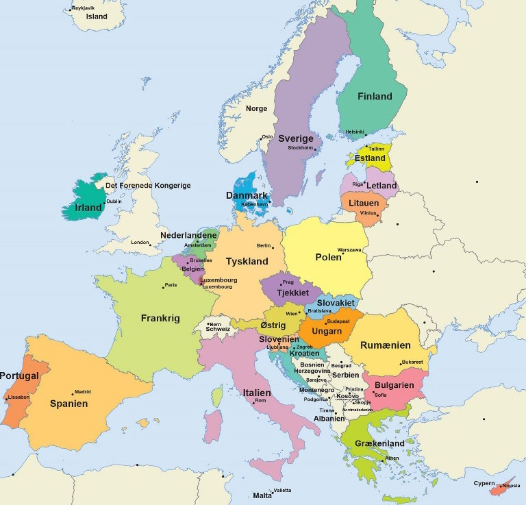
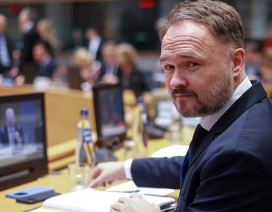
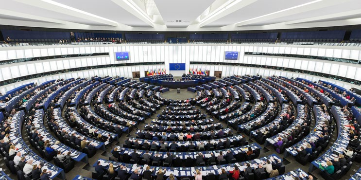
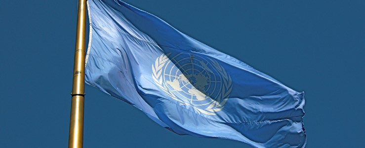
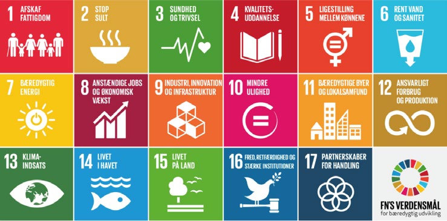
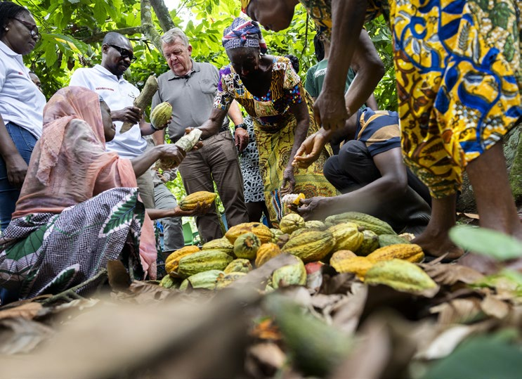

Fakta-ark 18: Danmark og
Áudio
sidde 96
Fakta-ark 18: Danmark og omverdenen
Læremateriale Til Medborgerskabsprøven

sidde 97
Danmark er medlem af EU. EU er et økonomisk, politisk og retligt* samar bejde mellem 27 europæiske lande. EU’s hovedkvarter er i Bruxelles i Belgien. Medlemslandene samarbejder bl.a. om miljø, forbrugerspørgsmål og fri handel mellem landene.EU’s 27 medlemslande: Belgien, Bulgarien, Cypern, Danmark, Estland, Finland, Frankrig, Grækenland, Irland, Italien, Kroatien, Letland, Litauen, Luxembourg, Malta, Nederlandene, Polen, Portugal, Rumænien, Slovakiet, Slovenien, Spanien, Sverige, Tjekkiet, Tyskland, Ungarn, Østrig. Grafik: EU.
Danmark er medlem af adskillige internationale organisationer. På den måde har Danmark indflydelse på verden uden for Danmark. Samtidig har beslutninger, der tages i de internationale organisationer, indflydelse på rammerne* for det danske samfund. Størst indflydelse har EU – Den Europæiske Union. Men også beslutninger i FN (de Forenede Nationer) har betydning. Desuden samarbejder Danmark med andre lande og selvstyrende områder i Norden.
Læremateriale Til Medborgerskabsprøven Fakta-Ark 18: Danmark Og Omverdenen
Dette fakta-ark handler om: • EU – den Europæiske Union • FN – de Forenede Nationer • Danmark og Norden • Internationalt samarbejde om udvikling
Eu – Den Europæiske Union
EU’s 27 medlemslande. Grafik: EU.
sidde 98
Danmark blev medlem af EU, eller EF, som det hed dengang, i 1973. Det skete efter en folkeafstemning, hvor danskerne skulle stemme ja eller nej til, om Danmark skulle være medlem. Dengang var der ligesom nu både modstandere og tilhængere af medlemskabet i befolkningen.
Læremateriale Til Medborgerskabsprøven Fakta-Ark 18: Danmark Og Omverdenen
Siden Danmark blev medlem, har EU fået indflydelse på flere og flere områder. Og EU har i dag indflydelse på store dele af lovgivningen i de lande, der er medlem af EU.
Medlemslandene samarbejder bl.a. om miljø, forbrugerspørgsmål og fri handel mellem landene. 21 af de 27 EU-lande har en fælles valuta – euroen. Danmark er ikke med i den fælles valuta, men har valgt at beholde den danske valuta (kronen).
Hvert femte år er der valg til Europa-Parlamentet, som er en vigtig institution i EU. Man skal være statsborger i et EU-land for at kunne stemme til EuropaParlamentet.
Eu’S Indflydelse På Dansk Politik
Siden Danmark blev medlem, har EU fået indflydelse på flere og flere områder. Og EU har i dag indflydelse på store dele af lovgivningen i de lande, der er medlem af EU – herunder Danmark.
Fx har EU stor indflydelse på den økonomiske politik i Danmark. Det betyder bl.a., at EU har sat grænser for, hvor store underskud der kan være på det danske statsbudget.
EU har også stor indflydelse på mange andre områder som fx landbrugspolitik og miljøpolitik. Men Danmark har også indflydelse på EU’s politik. Danske mini stre og embedsmænd deltager i de møder i EU, hvor EU’s politikker og lovgivning fastlægges*.
De Danske Forbehold
I 1992 var der en folkeafstemning i Danmark om en ny EU-traktat (Maastrichttraktaten), der skulle give EU mere indflydelse på medlemslandenes forhold.
Danskerne skulle blandt andet stemme ja eller nej til, om Danmark skulle være med i et tættere økonomisk samarbejde med de andre EU-lande, og om man skulle have en fælles valuta. Et flertal stemte nej til den nye EU-traktat.
De andre EU-lande sagde ja til den nye EU-traktat. Den danske regering beslut tede derfor at forhandle med de andre EU-lande om at få nogle danske undta gelser*. Det betød, at Danmark fik nogle forbehold, det vil sige nogle områder, hvor Danmark ikke er med i EU-landenes samarbejde.

sidde 99
Danmarks forbehold handler blandt andet om:
Læremateriale Til Medborgerskabsprøven Fakta-Ark 18: Danmark Og Omverdenen
- Den fælles valuta, euroen. Dette forbehold betyder, at Danmark ikke har euroen som valuta.
- Retligt samarbejde. Dette forbehold betyder, at Danmark ikke deltager i det fælles EU-samarbejde om fx nye fælles EU-regler om politi, strafferet, asyl, indvandring, skilsmisser og forældremyndighed.
Danmark kan selv bestemme, om man vil afskaffe* et eller flere af forbeholdene. Forbeholdene vil kunne fjernes efter en ny folkeafstemning, hvor den danske befolkning stemmer for at afskaffe dem.
Tidligere havde Danmark også et forbehold over for EU’s forsvars- og sikker hedspolitik, så Danmark for eksempel ikke deltog i militære operationer, som er en del af EU-samarbejdet. Dette såkaldte ’forsvars-forbehold’ blev ophævet, som følge af en folkeafstemning den 1. juni 2022. Et flertal på 67 procent stemte ja til at ophæve forbeholdet, mens et mindretal på 33 procent stemte nej.
Eu’S Vigtigste Institutioner Og Danmarks Repræsentation I Eu
EU’s overordnede* politiske retningslinjer* vedtages* i Det Europæiske Råd (EU-topmøder). Her deltager den danske statsminister sammen med stats- og regeringschefer fra de andre EU-lande.
Lige som de andre medlemslande i EU, sender Danmark en kommissær til Europa-kommissionen. EuropaKommissionen er delt op i forskellige politiske områder – fx miljø, økonomi og landbrug. Hvert område ledes af en kommissær, og hvert land i EU har en EU-kommissær. Kommissærerne fungerer ikke som repræsentanter for det land, de kommer fra, og de skal arbejde uafhængigt* af deres eget lands interesser.
Ministerrådet består af repræsen tanter for alle medlemslandenes regeringer. Når der er møde i Mini sterrådet, deltager medlemslandenes ministre for det pågældende område. Fx deltager den danske miljøminister sammen med miljøministrene fra de andre EU-lande i Ministerrådets møder om miljøpolitik.Danmarks EU-kommissær Dan Jørgensen. Foto: Olivier Hoslet/Ritzau Scanpix.
Danmarks EU-kommissær Dan Jørgensen. Foto: Olivier Hoslet/Ritzau Scanpix.

sidde 100
De forskellige lande i EU skiftes også til at have et såkaldt formandskab for Ministerrådet. Dette går på skift hver sjette måned, og landet, der har "EU-for mandskabet", leder møderne i rådet og i en lang række udvalg og komiteer. Sidste danske EU-formandskab var i 2025.
Læremateriale Til Medborgerskabsprøven Fakta-Ark 18: Danmark Og Omverdenen
EU har desuden en domstol: EU-Domstolen. Den har omfattende rettigheder både til at tolke* EU’s traktat og til at tage stilling i retssager, der angår EU’s regler. Domstolen har haft stor betydning for den praktiske udformning af EU-samarbejdet.Europa-Parlamentet i Bruxelles.
Europa-Parlamentet vælges direkte af befolkningerne i EU's 27 medlemslande. Der afholdes valg hvert femte år. Europa-Parlamentet har i alt 720 medlemmer, hvoraf 15 er valgt i Danmark. Der er typisk en lavere deltagelse ved valg til Europa-Parlamentet end ved valg til Folketinget. Stemmeprocenten i Danmark ved valget til Europa-Parlamentet i 2024 var på 58 procent. Ved valget til Folke tinget i 2026 var stemme-procenten på 84 procent.
Europa-Parlamentet i Bruxelles.
Europarådet Og Den Europæiske Menneske Rettighedsdomstol
Europarådet er en selvstændig organisation, der består af 47 europæiske lande. Danmark har været medlem fra starten i 1949. Europarådet har bl.a. vedtaget* Den Europæiske Menneskerettighedskonvention.
Den indeholder en række grundlæggende rettigheder, som i et vist omfang svarer til de rettigheder, man kender fra den danske grundlov, fx ytringsfrihed og forsamlingsfrihed. Den indeholder også andre rettigheder, fx forbud mod tortur og ret til retfærdig rettergang.

sidde 101
Fn – De Forenede Nationer
Læremateriale Til Medborgerskabsprøven Fakta-Ark 18: Danmark Og Omverdenen
FN blev grundlagt i 1945, kort efter afslutningen på 2. verdenskrig. Danmark har været medlem fra begyndelsen. FN er en sammenslutning af næsten alle stater i verden, i alt 193. FN’s formål er at skabe fred og udvikling i verden. FN arbejder bl.a. for at hjælpe ved store katastrofer (fx sult og naturkatastrofer). FN forsøger også at hjælpe i kampen mod analfabetisme og sygdomme.
FN arbejder desuden med at fremme menneskerettigheder i alle lande i verden. Det gælder fx religionsfrihed og ytringsfrihed samt forbud mod tortur og diskri mination.
Det er rettigheder, der i et vist omfang svarer til rettighederne i Den Europæiske Menneskerettighedskonvention.
Rettighederne omfatter også etniske, religiøse og sproglige minoriteters ret til at have deres egen kultur, til at praktisere deres egen religion og til at bruge deres eget sprog.
Fn’S Sikkerhedsråd
FN har et sikkerhedsråd. FN’s sikkerhedsråd spiller en stor rolle for arbejdet for fred i verden. Frankrig, Kina, Rusland, Storbritannien og USA har en fast plads i sikkerhedsrådet.
Sikkerhedsrådet har ti øvrige medlemslande. De bliver valgt for to år ad gangen. Danmark er medlem af Sikkerhedsrådet i perioden 2025-26 og har tidligere været medlem i perioderne 1967-68, 1985-86 og 2005-06.
Sikkerhedsrådet kan også indføre økonomiske eller militære sanktioner mod et land, som fx undertrykker* befolkningsgrupper i landet, producerer ulovlige våben eller angriber andre lande. Sikkerhedsrådet kan også bruge militær magt, hvis det mener, at et bestemt land er en trussel* mod international sikkerhed.FN-fl
Sikkerhedsrådet har ansvar for at opretholde* international fred og orden. FN’s sikkerhedsråd kan fx bede medlemslandene om at ændre noget i deres politik, fx over for bestemte befolkningsgrupper.
FN-flaget.

sidde 102
Ud over bekæmpelse af fattigdom og social udvikling har verdensmålene også fokus på økonomisk udvikling, ligestilling, klima, fred og sikkerhed. Med verdensmålene har FN’s medlemslande således blandt andet forpligtet sig til at afskaffe ekstrem fattigdom, sikre uddannelse til alle, bedre sundhed, gode jobs og bæredygtig vækst i alle lande.FN’s 17 verdensmål.
Fn’S 17 Verdensmål
Læremateriale Til Medborgerskabsprøven Fakta-Ark 18: Danmark Og Omverdenen
FN’s medlemslande vedtog ved et topmøde i New York i september 2015 de nye verdensmål for bæredygtig udvikling. De 17 verdensmål gælder for alle verdens lande – og dermed også Danmark.
FN’s 17 verdensmål.
Danmark Og Norden
Norden omfatter landene Danmark, Norge, Sverige, Finland og Island samt de selvstyrende områder Færøerne, Grønland (under Danmark) og Ålandsøerne (under Finland). Danmark samarbejder med de andre nordiske lande. Der samar bejdes bl.a. på det retlige, det kulturelle, det sociale og det økonomiske område. Det nordiske samarbejde foregår bl.a. i Nordisk Råd og Nordisk Ministerråd.
Internationalt Udviklingssamarbejde
Danmark giver hvert år økonomisk støtte til udviklingslande. Det kalder man for udviklingsbistand. Danmark er et af de lande i verden, der betaler mest i udviklingsbistand i forhold til befolkningens størrelse. Bistanden* i 2026 er på cirka 23 milliarder kroner svarende til 0,7 procent af den såkaldte bruttonatio nalindkomst (BNI).
Danmarks udviklingsbistand har som mål blandt andet at bekæmpe fattigdom, skabe jobs, handel og investeringer, støtte den grønne omstilling, understøtte kvinders og pigers rettigheder samt skabe udvikling i verdens fattigste lande. Bistanden gives blandt andet til udviklingsaktiviteter, der gennemføres i sam

sidde 103
arbejde med myndighederne i udviklingslandene. Danmark kan også gennem føre udviklingsaktiviteter og humanitær bistand sammen med internationale organisationer og private hjælpeorganisationer, fx Folkekirkens Nødhjælp eller Røde Kors.
Læremateriale Til Medborgerskabsprøven Fakta-Ark 18: Danmark Og Omverdenen
Afrika er den verdensdel, der modtager størstedelen af Danmarks udviklings bistand.
Det hænger blandt andet sammen med, at Afrika er nabo til Europa, og at det, der sker i Afrika, kan have stor betydning for Europa (og dermed for Danmark). Der er stor forskel mellem de 54 afrikanske lande, men samlet set er Afrika verdens fattigste kontinent, flere steder er der borgerkrige og andre konflikter. Og det er i Afrika, at man mærker nogle af de værste konsekvenser af klimafor andringerne i form af for eksempel oversvømmelser, ekstrem varme, misvækst i landbruget og flere områder med ørken.
Den danske regering har derfor i 2024 fremlagt en ny og samlet 'Strategi for et styrket dansk engagement med de afrikanske lande'. Strategien skal bidrage yderligere til at skabe økonomisk vækst, samhandel med danske virksomheder, kamp mod klimaforandringer og løsning af konflikter. Et andet formål er også at bidrage til at forebygge og bremse flygtningestrømme mod Europa.Tidligere minister for udviklingsbistand Christian Friis Bach besøger et dansk støttet projekt, d
Afrikas befolkning vokser også meget hurtigt. Det skaber på den ene side mulighed for mere økonomisk vækst, mere samhandel og flere investeringer, men også for større problemer med for eksempel fattigdom, krig og klimafor andringer.
Udenrigsminister Lars Løkke Rasmussen besøger en kakao-plantage i Ghana. Foto: Finn Frandsen/Ritzau Scanpix.
Fonte: Læremateriale til Medborgerskabsprøven, SIRI.